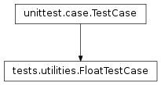

tests.utilities module¶
Class Inheritance Diagram¶
A collection of general use testing utilities.
-
class
tests.utilities.FloatTestCase(methodName='runTest')[source]¶ Bases:
unittest.case.TestCaseTest case involving floating point comparisons.
-
assertApprox(value_1, value_2, message='')[source]¶ Assert that the two values are equal to wihin the current tolerance.
Notes
The exact definition is:
|value_1 - value_2| <= tolerange * |value_1 + value_2| * float_info.epsilon
Parameters: - value_1 – The first of the two values to compare.
- value_2 – The second of the two values to compare.
Returns: True iff the two values are within tolerance of each other.
-
set_tolerance(tolerance)[source]¶ Set the tolerance for floating point comparisons.
Parameters: tolerance – The maximum fractional difference in units of floating point epsilon to allow when comparing two floating point numbers. See assertApprox for more details. Returns: None
-
tolerance= 10.0¶
-